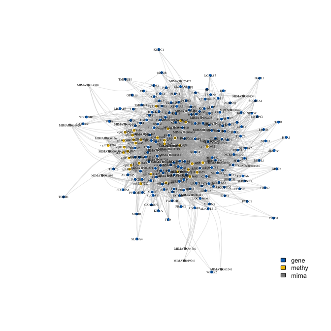
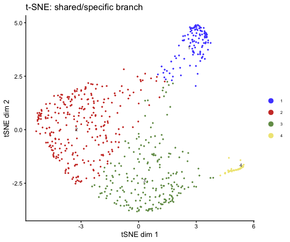
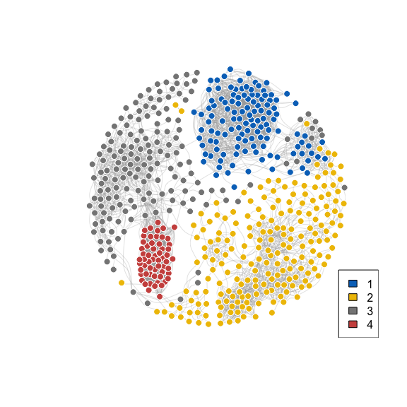
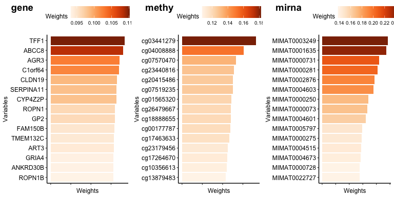
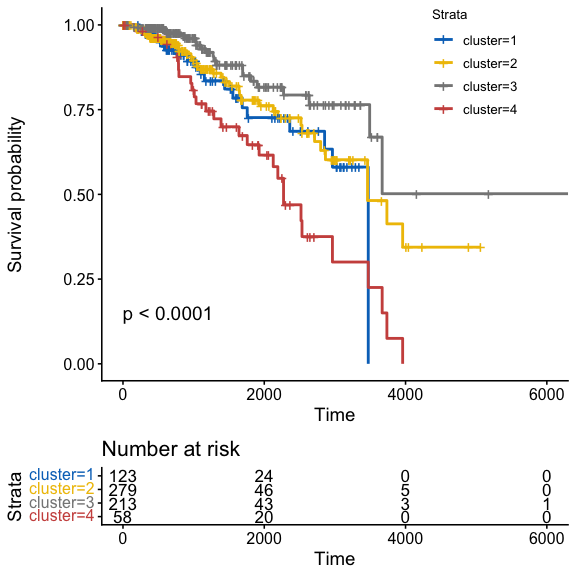

1. Introduction
High-throughput molecular profiling now routinely produces matched measurements across genomics, epigenomics, transcriptomics, and proteomics for the same set of samples. Jointly analyzing these data layers can reveal biological structure that no single omics platform captures alone, but doing so requires methods that handle heterogeneous feature spaces, mixed signal-to-noise ratios, and block-wise correlation without strong distributional assumptions.
multiRF addresses this through multivariate
random forests. Each tree splits on predictors from one omics
block while optimizing a composite criterion over responses
from another, yielding forest-weight and proximity matrices
that encode cross-platform sample similarity. Rather than
relying on a predefined distance metric, the forest learns
a sample-by-sample similarity structure directly from the
data: two samples are similar when trees consistently route
them to the same terminal node. The package then decomposes
this learned similarity into shared (cross-omics) and
specific (within-omics) components and clusters samples in
each space separately, producing both a global integrative
clustering and per-platform subtype assignments. An enhanced
proximity mode further refines these similarities by
incorporating sibling-leaf relationships (pairs of
leaves that share the same parent split), weighted by
the correlation of their sample profiles. Variable
importance is quantified via inverse minimal depth (IMD),
which measures how early each feature enters the tree
ensemble and how much it contributes to the multivariate
split criterion.
The computational backend is a purpose-built C++ engine
(via Rcpp) that constructs multivariate regression and
unsupervised forests with OpenMP thread-level parallelism.
Forest weights, proximity matrices, and optionally enhanced
proximity with sibling-leaf corrections are all computed
during tree construction in a single pass, avoiding the
overhead of post-hoc R-level tree traversal. On typical
multi-omics datasets (500-1000 samples, 3 platforms,
300 trees), the native engine runs 20-30% faster than
an equivalent randomForestSRC pipeline while
producing statistically equivalent output.
2. Multivariate splitting
To model each cross-modal connection, multiRF
fits a multivariate random forest with one omics block as
the predictor matrix and another as the multivariate
response. Unlike a univariate regression forest, each tree
is grown by a composite splitting rule that considers
multiple response dimensions jointly. The splitting rule
implemented here is a variation of the multivariate random
forest framework of
Li and Xiao (2011) and the normalized composite
criterion in randomForestSRC
(Tang and Ishwaran, 2017;
rfsrc
mvsplit vignette), re-implemented in C++ for speed.
At each candidate split in node \(t\), a random subset
\(\mathcal{J} \subset \{1,\dots,p_a\}\) of
\(q_{\mathrm{try}}\) response columns is drawn (analogous
to the predictor-side mtry but applied to
responses), and the selected responses are standardised to
unit within-node variance. The split score is
where \(Y_{ij}^{*}\) is the centred value of response variable \(j\) for sample \(i\), \(\hat\sigma_j^2\) is the within-node variance of column \(j\), and \(t_L, t_R\) denote the left and right daughter nodes with sizes \(n_{t_L}, n_{t_R}\). Normalizing each \(G_j\) by its own variance ensures all response columns contribute on a comparable scale regardless of their marginal dispersion. The partition that maximizes \(G_q\) is selected.
The default \(q_{\mathrm{try}} = \lceil p_a / 3 \rceil\) balances information content per split against response-level diversity across nodes: each split focuses on a random subspace of \(p_a\), so different splits within the same tree,and different trees within the forest,learn complementary aspects of the joint response structure. When \(p_a \gg n\), restricting the split evaluation to \(q_{\mathrm{try}} \ll p_a\) random response columns regularises the criterion, reducing its effective variance while preserving the multivariate character of the tree.
At every node, mtry predictor columns and
ytry response columns are sampled independently.
When nsplit > 0 (default 10), candidate
cutpoints are drawn at random from the set of distinct
predictor values; setting nsplit = 0
evaluates all distinct cutpoints (deterministic splitting).
Nodesize is enforced at the parent level: a node is eligible
for splitting only when it contains at least
\(2 \times \texttt{nodesize}\) samples, and individual
cutpoints require only that both children are non-empty.
The entire split search, tree construction, and matrix
accumulation are implemented in C++ with OpenMP parallelism,
avoiding the overhead of R-level tree traversal that would
otherwise dominate runtime for forests with hundreds of
trees.
3. Installation
The native C++ engine compiles from source during installation and
requires a C++17 compiler (Rtools on Windows,
Xcode CLI on macOS, g++ or
clang++ on Linux). OpenMP support is optional but
recommended for parallel tree construction.
randomForestSRC is not required; the package uses its own
forest implementation by default.
4. Toy data
A subsampled TCGA BRCA dataset is bundled for demonstration. It contains three matched omics blocks (gene expression, methylation, miRNA) and clinical annotations including PAM50 subtypes.
library(multiRF)
data("tcga_brca_data")
names(tcga_brca)
dim(tcga_brca$gene)
dim(tcga_brca$methy)
dim(tcga_brca$mirna)#> [1] "gene" "methy" "mirna" #> [1] 674 200 #> [1] 674 200 #> [1] 674 100
5. Clustering workflow
fit <- mrf3(
tcga_brca,
k = 4,
ntree = 100,
filter_mode = "none",
run_imd = TRUE,
seed = 529
)
summary(fit)
table(get_clusters(fit))
get_top_vars(fit, n = 10)Comparing backends
fit_proximity <- mrf3(
tcga_brca, k = 4,
main_clustering = "proximity",
ntree = 100, seed = 529
)
fit_enhanced <- mrf3(
tcga_brca, k = 4,
main_clustering = "enhanced_proximity",
ntree = 100, seed = 529
)Compare against PAM50
common_ids <- intersect(
names(get_clusters(fit)),
tcga_brca_clinical$sampleID
)
pam50 <- tcga_brca_clinical$BRCA_Subtype_PAM50[
match(common_ids, tcga_brca_clinical$sampleID)
]
cluster_metric_matrix(
list(
similarity = get_clusters(fit)[common_ids],
proximity = get_clusters(fit_proximity)[common_ids],
enhanced_proximity = get_clusters(fit_enhanced)[common_ids],
PAM50 = pam50
),
metric = "ari"
)6. Variable selection
fit_vs <- mrf3_fit(
dat.list = tcga_brca,
clustering_args = list(shared_k = 4, specific_k = 4),
ntree = 100,
run_imd = TRUE,
run_variable_selection = TRUE,
variable_selection_args = list(
method = "mixture",
level = 0.05,
normalized = TRUE
),
seed = 529
)
get_selected_vars(fit_vs)
get_vs_summary(fit_vs)Compare methods
vs_test <- mrf3_vs(
mod = fit_vs, dat.list = tcga_brca,
method = "test", re_fit = FALSE, level = 0.05
)
vs_mixture <- mrf3_vs(
mod = fit_vs, dat.list = tcga_brca,
method = "mixture", re_fit = FALSE, level = 0.05
)
lapply(
list(test = vs_test, mixture = vs_mixture),
get_selected_vars
)7. Robust clustering
fit_robust <- mrf3_fit(
dat.list = tcga_brca,
clustering_args = list(shared_k = 4, specific_k = 4),
ntree = 100,
run_imd = TRUE,
run_variable_selection = TRUE,
run_cluster_imd = FALSE,
run_robust_clustering = TRUE,
variable_selection_args = list(method = "mixture"),
seed = 529
)
table(get_clusters(fit_robust, which = "robust"))
summary(fit_robust)Pairwise IMD
pw <- pairwise_imd(fit_robust)
plot_network(pw, label = TRUE, vertex.size = 3, vertex.label.cex = 0.4)
8. Plots
t-SNE
plot_tsne(
mod = fit,
group = get_clusters(fit),
source = "specific_shared",
main = "t-SNE: shared/specific branch"
)
Sample network
plot_network(
dat = fit,
group = get_clusters(fit),
source = "specific_shared",
cutoff = 0.01
)
Feature importance
plot_weights(fit_vs, weight_source = "imd", top = 15)
Survival
clinical_ids <- tcga_brca_clinical$sampleID
clusters <- get_clusters(fit)
if (is.null(names(clusters))) {
names(clusters) <- rownames(tcga_brca[[1]])
}
km_ids <- intersect(names(clusters), clinical_ids)
clinical_sub <- tcga_brca_clinical[match(km_ids, clinical_ids), , drop = FALSE]
keep <- !is.na(clinical_sub$OS.time) & !is.na(clinical_sub$OS)
plot_km(
test_var = factor(clusters[km_ids][keep]),
time_var = "OS.time",
event_var = "OS",
pheno_mat = clinical_sub[keep, , drop = FALSE]
)
9. API reference
Core workflow
| Function | Purpose |
|---|---|
mrf3() | Compact end-to-end workflow (fit + cluster). |
mrf3_fit() | Staged workflow with full parameter surface. |
mrf3_vs() | Variable selection on existing fit. |
mrf3_stability() | Resampling-based stability assessment. |
pairwise_imd() | Variable-level pairwise co-occurrence network. |
filter_omics() | Pre-fitting feature filtering. |
Accessors
| Function | Returns |
|---|---|
get_clusters() | Cluster assignments. |
get_weights() | Per-block feature importance weights. |
get_top_vars() | Top-n variables by IMD weight. |
get_selected_vars() | Selected variable names from VS. |
get_vs_summary() | Variable-selection summary table. |
get_connection() | Block pairing structure. |
Plotting
| Function | Input |
|---|---|
plot_tsne() | Similarity or reconstruction |
plot_umap() | Similarity or reconstruction |
plot_network() | Similarity graph or pairwise IMD |
plot_weights() | IMD weights |
plot_km() | Clusters + clinical |
plot_circos() | Adjacency structure |
Metrics
| Function | Returns |
|---|---|
cluster_metrics() | ARI, Jaccard, NMI, purity. |
cluster_metric_matrix() | Pairwise metric matrix. |
10. References
- Zhang, W. et al. (2025). An integrative multi-omics random forest framework for robust biomarker discovery. GigaScience, 14, giaf148. doi:10.1093/gigascience/giaf148
- Li, M. and Xiao, Y. (2011). Multivariate random forests. Wiley Interdisciplinary Reviews: Data Mining and Knowledge Discovery, 1(1), 80-87.
- Ishwaran, H. et al. (2008). Random survival forests. Annals of Applied Statistics, 2(3), 841-860.
- Tang, F. and Ishwaran, H. (2017). Random forest missing data algorithms. Statistical Analysis and Data Mining, 10(6), 363-377.
- Ishwaran, H. and Kogalur, U.B.
randomForestSRC: multivariate splitting rule. https://www.randomforestsrc.org/articles/mvsplit.html